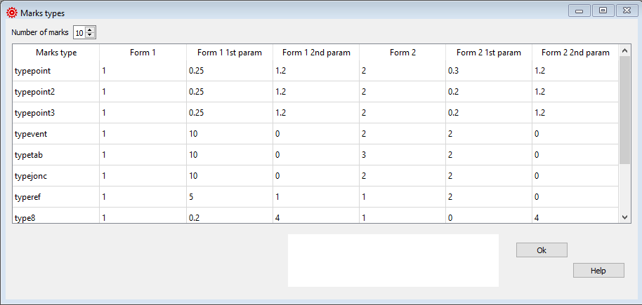

Mark types¶
This window allows the user to choose different types of marking elements in DXF files (one-dimensional points, minicircles, triangles, segments, …).
This is especially useful for laser cutting plotters, and the ability to adapt marking to manufacturer preferences.
Remember that leparagliding generates two types of plans, some for use with conventional printers (“print” version), and others for professional use with computerized cutting plotters (“laser” version).
{kind=link}
Raw data:
******************************************************
* 20. Marks types
******************************************************
10
typepoint 1 0.25 1.2 2 0.3 1.2
typepoint2 1 0.25 1.2 2 0.2 1.2
typepoint3 1 0.25 1.2 2 0.2 1.2
typevent 1 10. 0.0 2 2.0 0.0
typetab 1 10. 0.0 3 2.0 0.0
typejonc 1 10. 0.0 2 2.0 0.0
typeref 1 5. 1. 1 2.0 0.0
type8 1 0.2 4.0 1 0.0 4.0
type9 1 0.25 1.2 2 0.2 1.2
type10 1 0.25 1.2 2 0.2 1.2
Number of marks¶
Mark types is an optional section.
If you do not want to define/ use these parameters set the Number of configs value to 0.
Marks type |
Print Form 1 |
Print Form 1 1st param |
Print Form 1 2nd param |
typepoint 1 |
1=constructed point 2=minicircle |
radius of minicircle [mm] |
offset [mm] |
typepoint2 2 |
1 |
0.25 |
1.2 |
typepoint3 2 |
1 |
0.25 |
1.2 |
typevent |
1=two green points 2=segment 3=double segment |
points separation or segment [mm] |
offset [mm] |
typetab |
1=tree orange points 2=tree orange full control 3=triangle |
points separation or segment [mm] |
offset [mm] |
typejonc 2 |
1 |
0.0 |
|
typeref 2 |
1 |
5.0 |
0.0 |
type8 3 |
1 |
6 pos of roman number 0.0 totally left 1.0 totally right normal 0.2 or 0.5 |
6 vertical offset [mm] ref baseline |
type9 4 |
1 |
0.0 |
numbers size [cm] leading/ trailing edge ribs, trailing edge panels |
type10 5 |
1 |
0.0 |
numbers size [cm] diagonal ribs |
Marks type |
Laser Form 2 |
Laser Form 2 1st param |
Laser Form 2 2nd param |
typepoint 1 |
1=unidimensional 2=minicircle |
radius of minicircle [mm] |
offset [mm] |
typepoint2 2 |
2 |
0.2 |
1.2 |
typepoint3 2 |
2 |
0.2 |
1.2 |
typevent |
1=two green points 2=segment 3=double segment |
points separation or segment [mm] |
offset [mm] |
typetab |
1=tree orange points 2=tree orange full control 3=triangle |
points separation or triangle height [mm] |
offset [mm] |
typejonc 2 |
2 |
2.0 |
0.0 |
typeref 2 |
1 |
2.0 |
0.0 |
type8 3 |
1 |
0.0 |
6 offset between dots of roman numeral [mm]. (global size of the roman numerals) |
type9 4 |
1 |
6 offset in mm between dots of roman numeral [mm](global size of the roman numerals) in rod pockets |
6 offset in mm between dots of roman numeral [mm](global size of the roman numerals) in ribs |
type10 5 |
1 |
0.0 |
6 offset in mm between dots of roman numeral [mm](global size of the roman numerals) in diagonal ribs |
- 1(1,2)
typepoint is the point for general use
- 2(1,2,3,4,5,6,7,8)
still not used, set defaults
- 3(1,2)
romano numbering in panels generated using 3D shaping
- 4(1,2)
general numbers size, and roman marks size in ribs
- 5(1,2)
general numbers size in diagonal ribs
- 6(1,2,3,4,5,6)
print and laser

Types 1,2,3,4,5,8,9,10 now fully functional¶

Type8 marks parameters interpretation¶
A more detailed description you can find here Laboratori d'envol website.